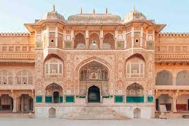
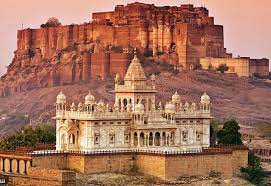
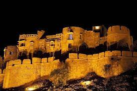
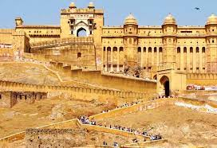
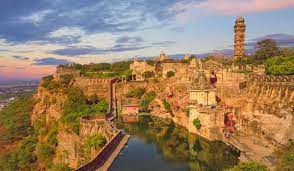
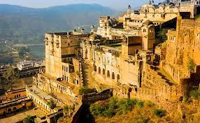
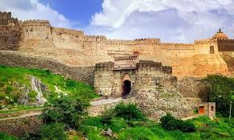
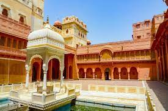
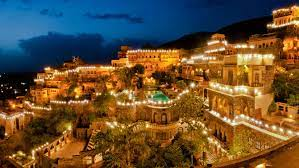

HERITAGE
Amar Fort :-
Attached to the Amber Palace, Amer Fort is the perfect neighbourhood you should visit to get that warm Rajasthani experience. Right from folk music encompassing the air to the finely-crafted marvelous stones and walls, Amer Fort does have quite a fancy appeal that would intrigue you. It is perched on a hillock of the extensive Aravalli Ranges and is also recognised as a UNESCO World Heritage Site. It is one of the most popular forts in Rajasthan and should be a must-visit to those who are visiting Jaipur.
Address: Devisinghpura, Amer, Jaipur, Rajasthan
Mehrangarh Fort :-
Nestled in the Blue City of Jodhpur, Mehrangarh Fort is the highlight of touristy delights! Commissioned by Rao Jodha back in 1460, the fort comes with very extensive highlights from the history books, including its movie affiliations! You heard that right. Movies such as Awarapan and The Dark Knight Rises have both had sequences shot here. The grandeur of Mehrangarh Fort makes it as one of the most popular forts in Rajasthan, there are exquisite carvings and interiors which flaunt the regal Rajasthani designs.
Address: P.B # 165, The, Fort Rd, Jodhpur, Rajasthan
Jaisalmer Fort :-
Reflecting the golden hues of the city, the Jaisalmer Fort is exquisite and one of the most famous forts in Rajasthan. Constructed back in 1156 AD by King Rawal Jaisal, the fort is also one of the largest forts in the country. Fun fact, another name for Jaisalmer Fort is Sonar Quila or Golden Fort, which basically spells the golden appeal of the Jaisalmer Fort. Since the fort is also perched on a hill, it is visible from every part of the city of Jaisalmer. In fact, if you visit the city of Jaisalmer and get a chance at stepping out in the evening, you would surely be amazed by the golden lights that deck up the fort!
Address: Near Gopa CHOCK, Khejer Para, Manak Chowk, Amar Sagar Pol, Jaisalmer, Rajasthan
Ranthambore Fort :-
Easily one of the popular forts in Rajasthan, Ranthambore Fort is nestled in the premises of the Ranthambore National Park. Cuddled by the warmth of the wilderness, the Ranthambore Fort was constructed back in the 10th century and is in perfect shape to this day! That's right. There have been many pursuers, but none of them managed to destroy or conquer it. The way to the top of Ranthambore Fort is also led through a stairwell which has been designed symmetrically. Carry your cameras to capture the best shots of the national park from a bird's eye view.
Address: 2, Ranthambhor Rd, Vigyan Nagar, Sawai Madhopur, Rajasthan
Chittorgarh Fort :-
Also known as Chittor Fort, the Chittorgarh Fort is sprawled across an extensive 700 acres of lands with very impressive architecture. The fort has been attacked and even destroyed thrice with the reign of Allauddin Khilji, Maharana Udai Singh and Bahadur Shah as rulers. Within the premises of the fort in Rajasthan, there are quite a few highlights such as the Meera Temple, Padmini's Palace, Gaumukh Reservoir and more that you can explore during your visit to the place.
Address: Chittor Fort Road, Chittorgarh, Rajasthan
Taragarh Fort :-
Located in Ajmer, Taragarh Fort comes with some intriguing history as it served as a center for military activities back in the Mughal era. The complex fort in Rajasthan is known for its historical significance, its hidden tunnels and a panoramic view to boast. Basically, the moment you step into the fort, you will be enveloped with a sense of inquisition as you would want to know more about the place's history, relevance and what makes this fort so strong despite 8 to 9 centuries of staying put.
Address: Taragarh Fort, Taragarh Rd, Taragarh, Ajmer, Rajasthan
Kumbhalgarh Fort :-
The birthplace of Maharana Pratap, one of the finest and most popular Mewar ruler, Kumbhalgarh Fort, is easily one of the top forts in Rajasthan that you should visit at all cost! Constructed by Maharana Kumbha back in the 15th century, the fort in Rajasthan is also named after the ruler. Here's another cool thing about the fort, which gives it such stature, it has the second-longest wall in the world following the Great Wall of China and covers an area of 36 km sq. Not just for a visit, you can even book hotels in Kumbhalgarh for a lovely luxury stay.
Address: Kumbhalgarh, Rajasthan
Junagarh Fort :-
Here's an interesting fact about the architecture of the Junagarh Fort. It is actually constructed not on a mountain ridge but on plateau land. With the eclectic Rajasthani architecture that can be witnessed throughout the property, the heritage fort does bring a sense of culture and tradition to itself. Many rulers have apparently lost their hearts to the beauty of the Junagarh Fort. Of course, not everybody got their way with being rulers to this fort. The formidable structure continues to remain a topic of interest to this day!
Address: Bikaner Fort, Bikaner, Rajasthan
Neemrana Fort :-
Looking for a perfect weekend getaway from Jaipur and Delhi? Well, Neemrana Fort is the ideal destination for you to pick. The popular fort in Rajasthan is every bit grand as one can imagine. Well, it does fall in the palatial vicinity of Neemrana Palace, so you can expect a well-maintained surrounding. Thanks to the fort, even the ancient town has found fame for being one of the best vacation destinations in the state. The grandeur and beauty of Neemrana Fort will surely leave you spellbound with a bird's eye view of the village from here. Plus, you can indulge in ziplining and checking out vintage cars too!
Address: 15th Century, Delhi-Jaipur Highway 122nd Milestone, Delhi - Jaipur Expy, Neemrana, Rajasthan